CS180 · Fall 2026 · Project 0 · portfolio
Becoming Friends with My Camera
One-sentence thesis of what these photos taught me about perspective vs. zoom.
Selfie: the wrong way vs. the right way
Same face size in the frame; only the camera position changed.
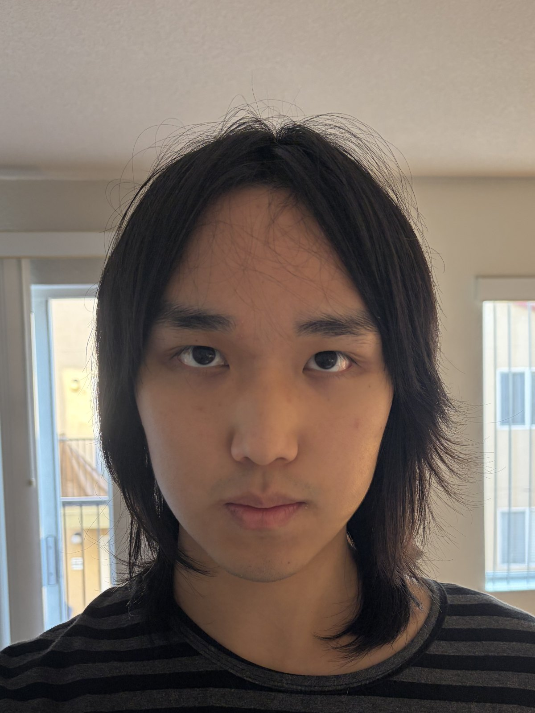
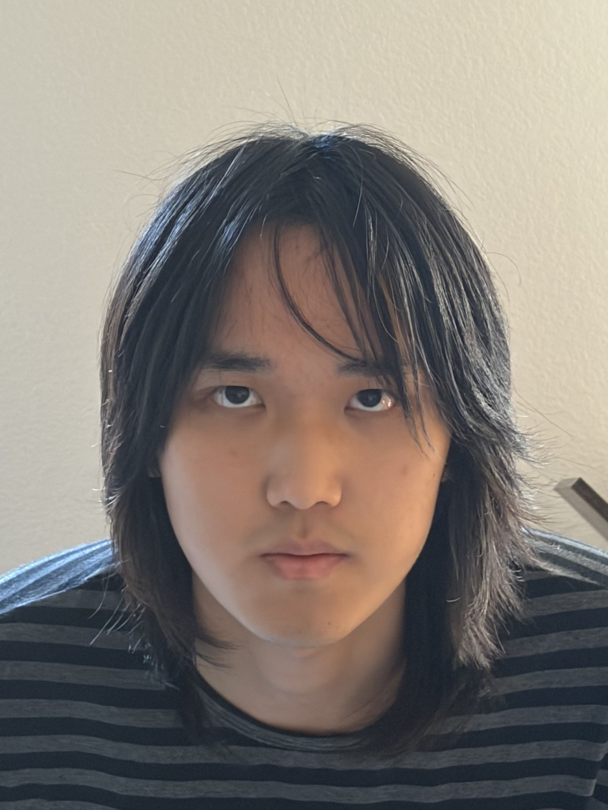
Why
Explain: what changed between the two shots, and why that changes how the nose/ears/background look.
Architectural perspective compression
Same building size; zoomed from far away vs. walked up close.
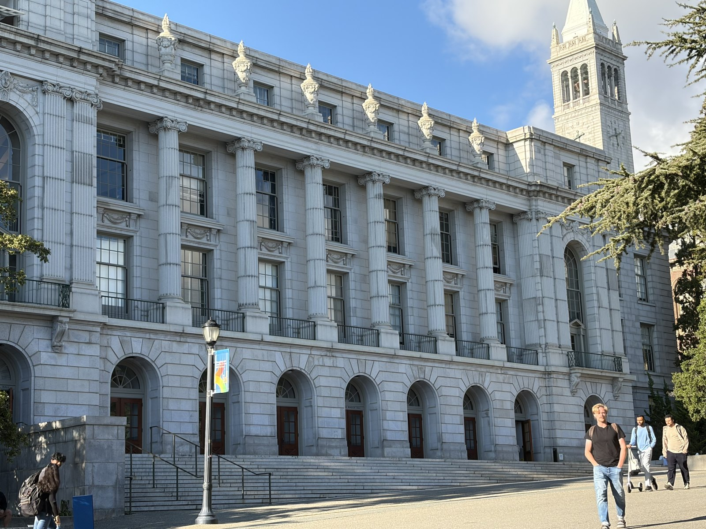
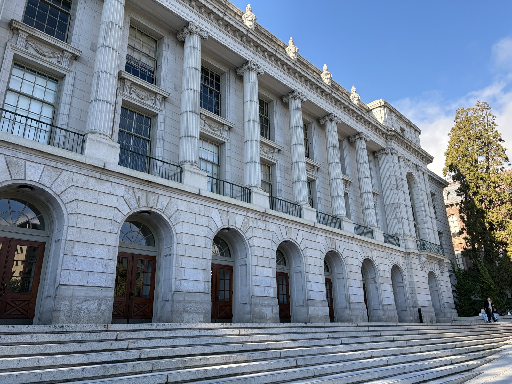
Same experiment on a smaller building: from across the plaza at 86 mm, then walked up to 26 mm.
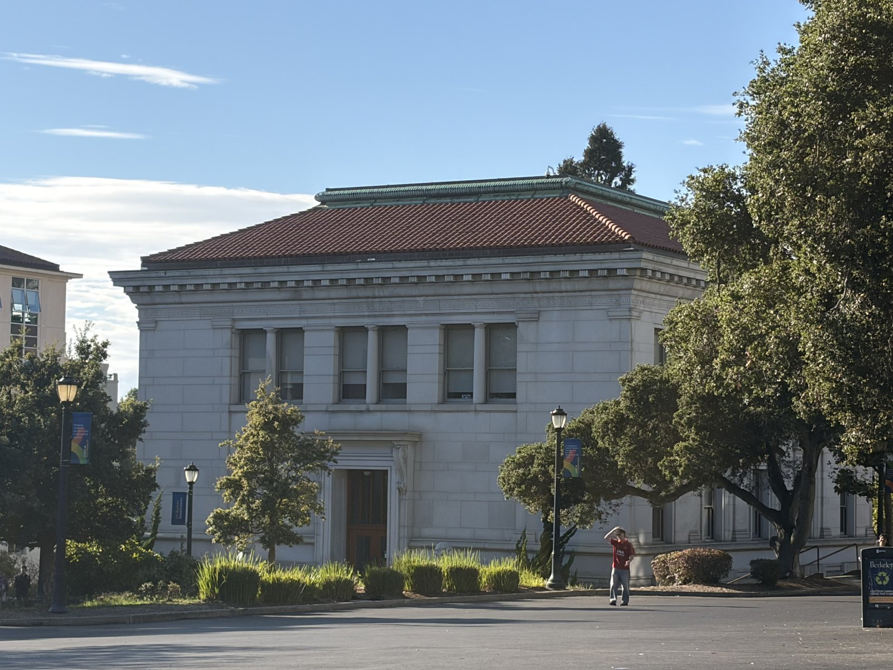
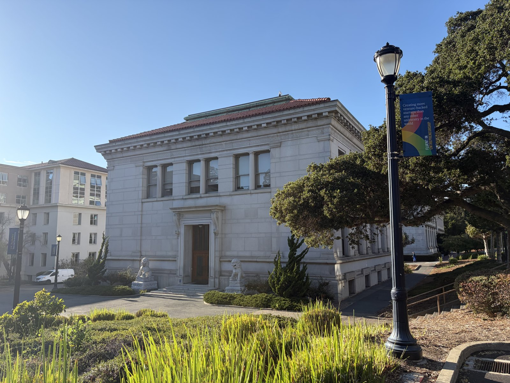
Why
Explain the flattening: what happens to the ratio of near-part size to far-part size as the camera moves back.
The dolly zoom
Camera moves back while zooming in; the subject stays put, the world behind it doesn't.
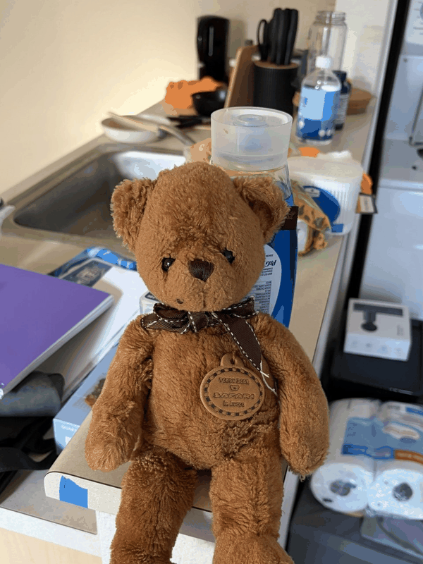
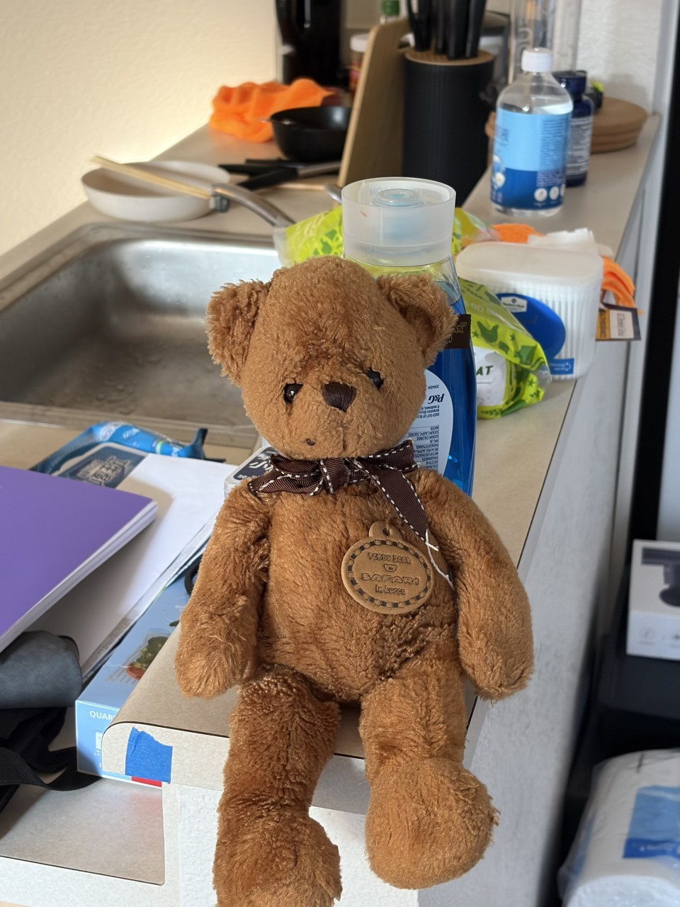
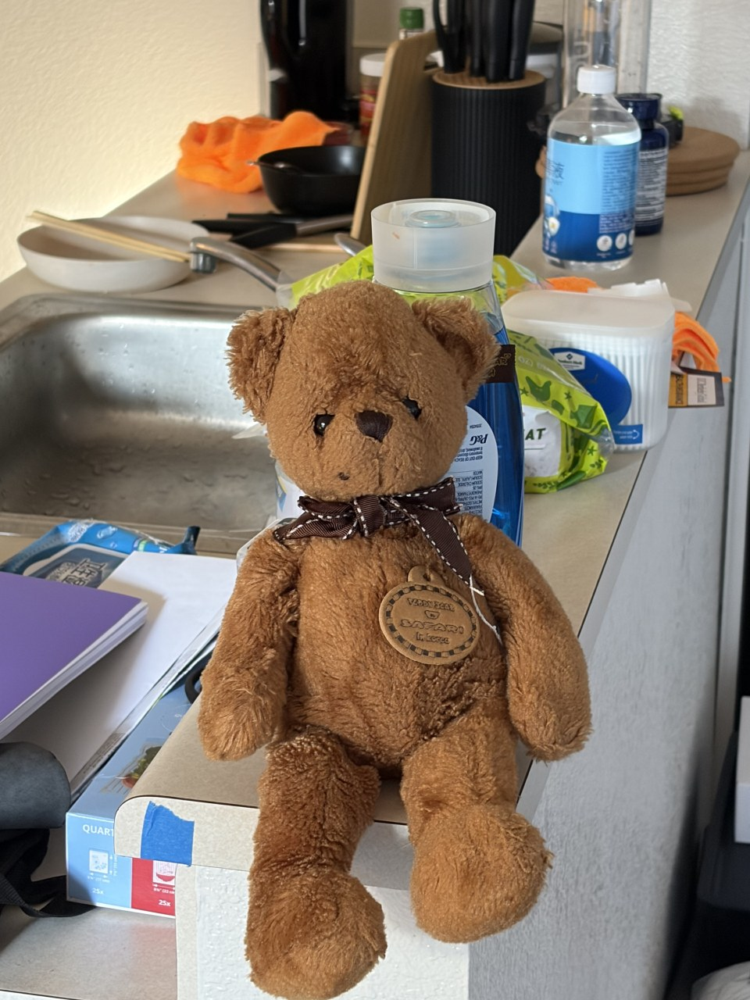
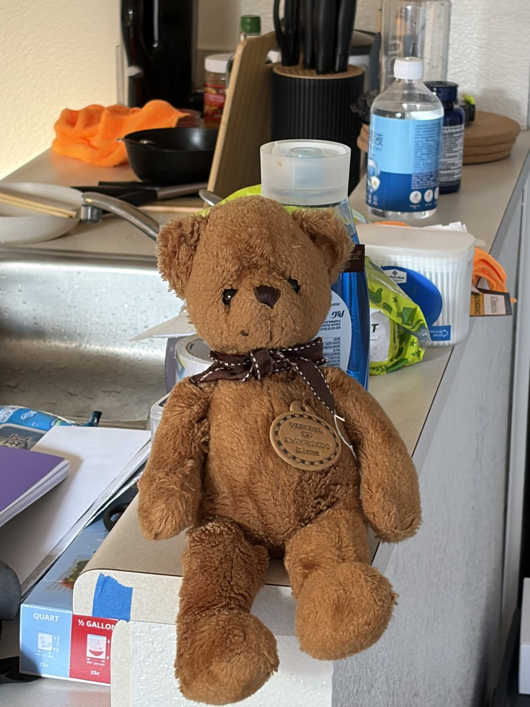
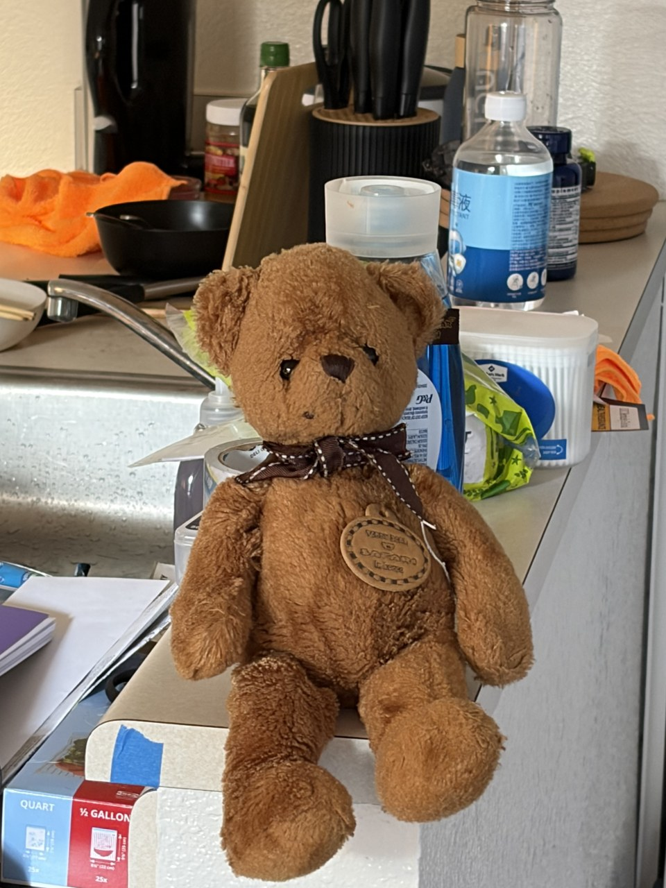
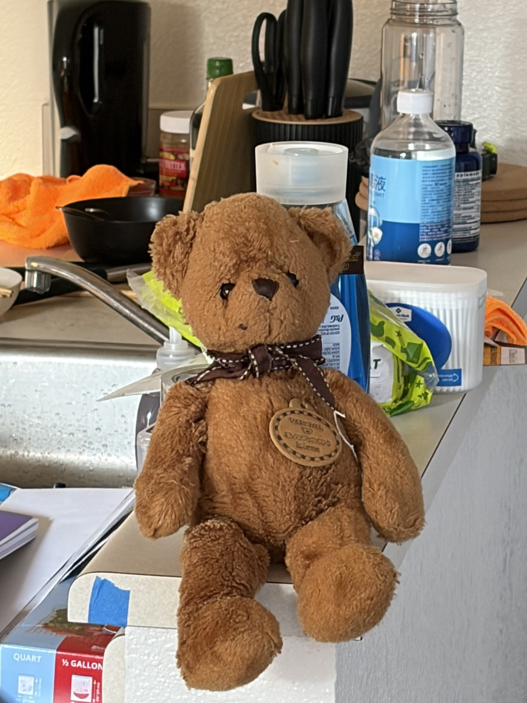
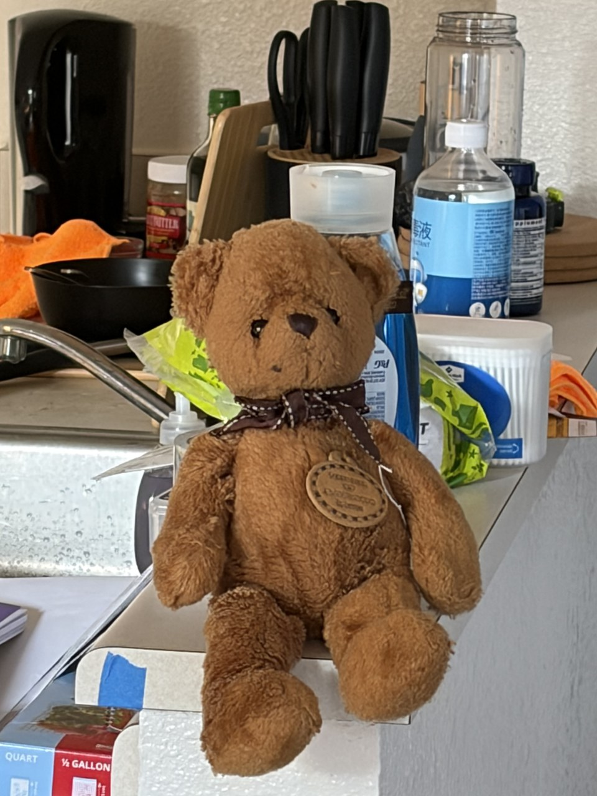
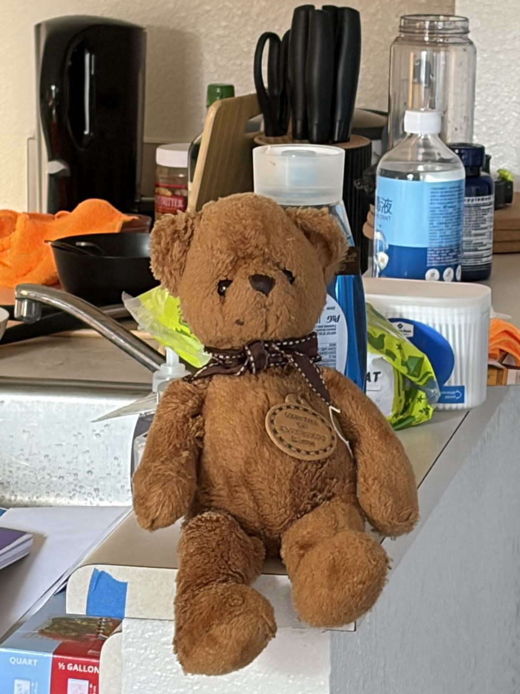
Why
Explain the effect, and tie it back to parts 1 and 2.